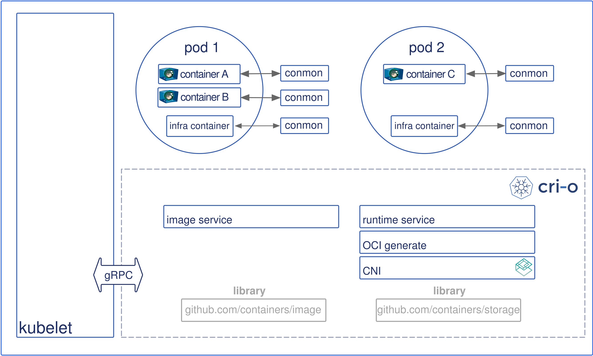
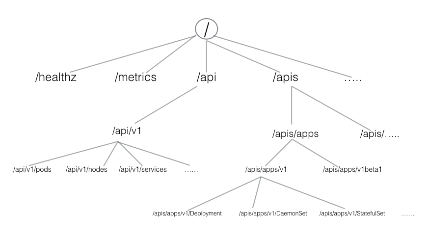
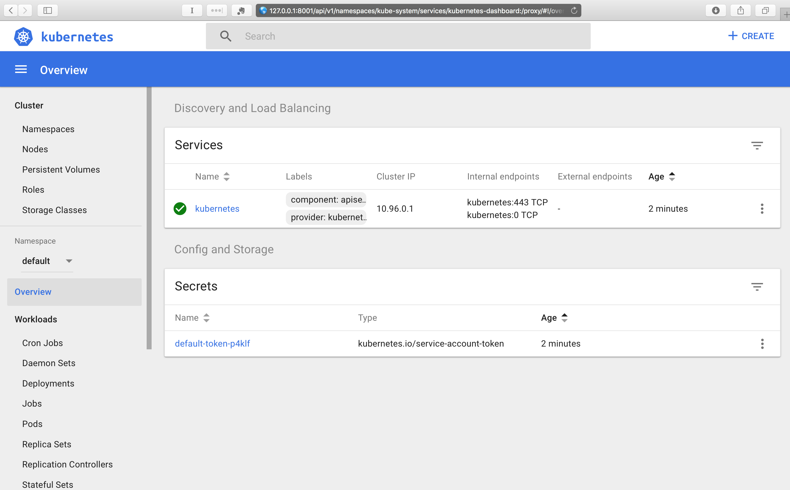
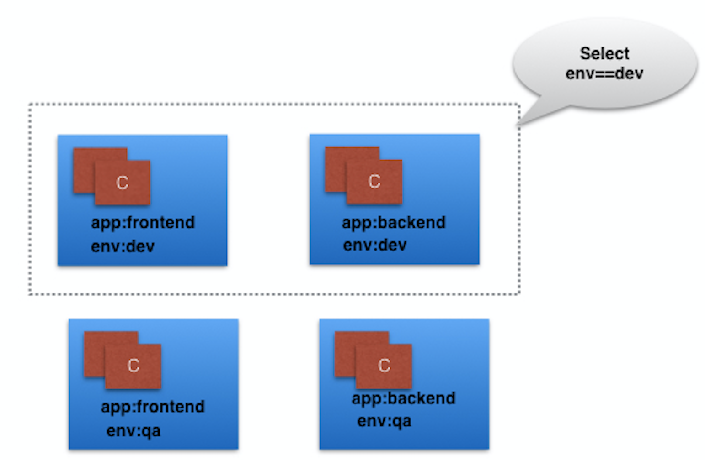
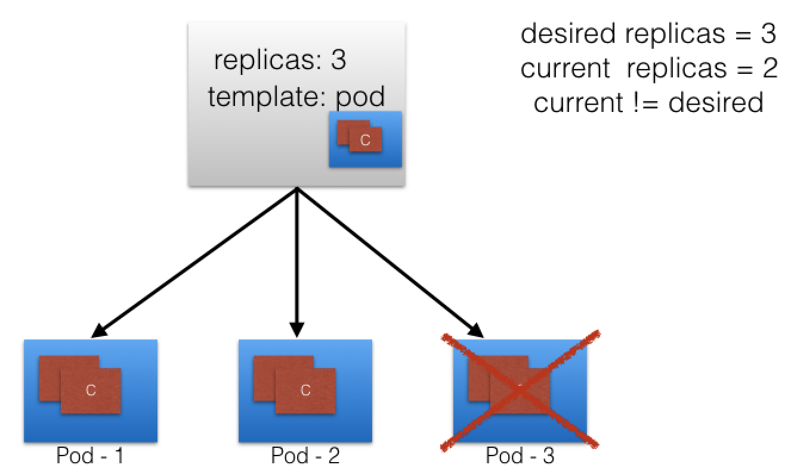
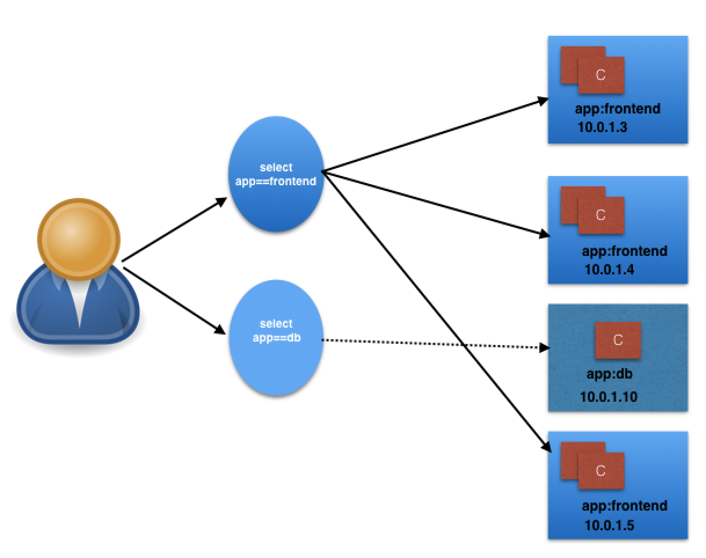

158
原有服务到microservice架构
- 重构方式：
- 停止新功能的实现，彻底重构
- 新功能用微服务方式实现，逐步重构；
- 挑战：
- 重构方式
- 用原语言实现（重用部分旧代码）更加经济；
- 设计不好的应该以新技术架构思路重新设计实现
- 与数据过分耦合的应用可能无法重构；
- 重构完成后选择机制/工具，保持所有模块的弹性；
- 重构方式
container Orchestration
-
Define the concept of container orchestration.
container
Microservices
Container Orchestration
已知的orchestrator ，推荐学习edx151x课程https://www.edx.org/course/introduction-cloud-infrastructure-linuxfoundationx-lfs151-x， -
Explain the reasons for doing container orchestration.
-
Discuss different container orchestration options.
-
Discuss different container orchestration deployment options.
Chapter 4. Kubernetes Architecture
4.2 the Kubernetes architecture.
- high Level arch
- One or more master nodes
- One or more worker nodes
- Distributed key-value store, such as etcd.

- detail level architecture
- Master node
manage state of a Kubernetes cluster;has the following components:- API server
- kube-apiserver
- Scheduler
- Controller managers
- etcd.
- API server
- Master node
4.2.3 Worker Node
worker节点为客户端应用程序提供运行环境。通过容器化的微服务，这些应用程序被封装在Pods中，由运行在主节点上的集群控制平面代理控制。pod被安排在worker节点上，在那里它们可以找到运行所需的计算、内存和存储资源，并可以通过网络与彼此和外部世界进行通信。Pod是Kubernetes中最小的调度单元。它是一个或多个编排在一起的容器的逻辑集合。我们将在后面的章节中进一步探讨它们。

Kubernetes Worker Node
同时，从外部世界访问应用程序时，我们连接到工作节点而不是主节点。我们将在以后的章节中深入探讨这个问题。
Worker Node Components
工作节点具有以下组件：
- 容器运行时
- kubelet
- kube-proxy
- 用于DNS、Dashboard、集群级监控和日志记录的加载项。
在接下来的几节中，我们将更详细地讨论它们。
Container Runtime
尽管Kubernetes被描述为一个“容器编排引擎”，但它没有直接处理容器的能力。为了运行和管理容器的生命周期，Kubernetes需要在Pod及其容器的调度节点上有一个容器运行时。Kubernetes支持许多容器运行时：
- Docker - 虽然是一个使用containerd作为容器运行时的容器平台，但它是Kubernetes最广泛使用的容器运行时
- CRI-O-一个用于Kubernetes的轻量级容器运行时，它还支持Docker映像注册
- containerd — 提供健壮性的简单可移植的容器运行时
- rkt - 一个pod本地容器引擎，它还运行Docker映像
- rktlet - 一个使用rkt的Kubernetes容器运行时接口（CRI）实现。
kubelet
kubelet是运行在每个节点上的代理，并与主节点的控制平面组件通信。它主要从API server接收Pod定义，并与节点上的容器运行时交互以运行与Pod相关的容器。它还监测吊舱运行容器的健康状况。
kubelet使用容器运行时接口（container runtime Interface，CRI）连接到容器运行时。CRI由协议缓冲区、gRPC API和库组成

Container Runtime Interface
(Retrieved from blog.kubernetes.io)
如上所示，充当grpc客户端的kubelet连接到充当grpc服务器的CRI shim，以执行容器和image操作。CRI实现了两个服务：ImageService和RuntimeService。ImageService负责所有与image相关的操作，RuntimeService负责所有与Pod和容器相关的操作。
容器运行时在Kubernetes中是写死的，但是随着CRI的发展，Kubernetes现在更加灵活，并且使用不同的容器运行时而不需要重新编译。Kubernetes可以使用任何实现CRI的容器运行时来管理pod、容器和容器映像。
在下一节中，我们将讨论一些CRI Shim。
kubelet - CRI shims
Below you will find some examples of CRI shims:
- dockershim

dockershim
(Retrieved from blog.kubernetes.io)
使用dockershim，容器是使用安装在工作节点上的Docker创建的。在内部，Docker使用containerd创建和管理容器。
- cri-containerd
使用cri-containerd，我们可以直接使用Docker更小的子程序containerd来创建和管理容器。

- CRI-O
CRI-O支持使用任何与Kubernetes兼容的开放容器倡议（OCI）的运行时。在创建本课程时，CRI-O支持runC和Clear Containers作为容器运行时。但是，原则上，任何符合OCI的运行时都可以插入。

kube-proxy
kube代理是运行在每个节点上的网络代理，负责动态更新和维护节点上的所有网络规则。它抽象了Pods网络的细节，并将连接请求转发给Pods。
我们将在后面的章节中更详细地探讨Pod网络。
Addons
Addon是Kubernetes中尚未提供的集群特性和功能，因此通过第三方pod和服务实现。
- DNS-集群DNS是将DNS记录分配给Kubernetes对象和资源所需的DNS服务器
- Dashboard-一个通用的基于web的集群管理用户界面
- 监视-收集集群级容器度量并将其保存到中心数据存储
- 日志记录-收集群集级容器日志，并将其保存到中心日志存储以进行分析。
Networking Challenges
基于解耦的微服务的应用程序在很大程度上依赖于网络，以模拟在单一程序时代曾经存在的紧密耦合。一般来说，网络并不是最容易理解和实现的。Kubernetes也不例外-作为一个容器化的微服务编排器，需要解决4个不同的网络挑战：
- Pods内容器对容器的通信
- 同一节点上或集群节点之间的Pod-to-Pod通信
- Pod到服务 在同一命名空间内和跨集群命名空间的通信
- 外部到服务的通信，以便客户端访问集群中的应用程序。
在部署Kubernetes集群之前，必须解决所有这些网络挑战。接下来，我们将看看如何解决这些挑战。
Container-to-Container Communication Inside Pods
当Pod启动时，在Pod内创建一个网络名称空间，运行在Pod内的所有容器都将共享该网络名称空间，以便它们可以通过localhost相互通信。
Pod-to-Pod Communication Across Nodes
在Kubernetes集群中，pod被随机地安排在节点上。不管它们的主机节点是什么，pod都可以与集群中的所有其他pod通信，而无需实现网络地址转换（Network Address Translation，NAT）。这是Kubernetes中任何网络实现的基本要求。
KubNetes网络模型旨在降低复杂性，并将POD视为网络上的VMS，其中每个VM接收IP地址-因此每个POD接收IP地址。这个模型被称为“IP-per-Pod”，确保了Pod到Pod的通信，就像vm能够相互通信一样。
不过，别忘了容器。它们共享Pod的网络名称空间，必须像VM上的应用程序那样协调Pod内的端口分配，同时能够在本地主机（Pod内）上相互通信。然而，通过使用CNI插件支持的容器网络接口（CNI），容器与整个Kubernetes网络模型集成。CNI是一组规范和库，允许插件为容器配置网络。虽然有一些核心插件，但大多数CNI插件是实现Kubernetes网络模型的第三方软件定义网络（SDN）解决方案。除了满足网络模型的基本要求外，一些网络解决方案还为网络策略提供支持。Flannel, Weave, Calico 只是Kubernetes集群可用的SDN解决方案的其中几个。

容器运行时将IP分配的任务发到CNI，CNI连接到底层配置的插件（如Bridge或MACvlan）以获取IP地址。一旦IP地址由相应的插件给出，CNI就会将其转发回请求的容器运行时。
有关更多详细信息，可以浏览Kubernetes文档。
Pod-to-External World Communication
对于在Kubernetes集群内的Pods中运行的成功部署的容器化应用程序，它需要来自外部世界的可访问性。Kubernetes通过服务实现外部可访问性，这些服务是封装集群节点上的网络规则定义的复杂构造。通过使用kube代理将服务公开给外部世界，应用程序可以通过虚拟IP从集群外部访问。
我们将有一个完整的章节专门讨论这个问题，所以我们稍后将深入讨论这个问题。
Chapter 5. Installing Kubernetes
Introduction and Learning Objectives
在本章中，我们将首先讨论可以安装Kubernetes的不同配置。然后，我们将讨论安装Kubernetes所需的基础设施，我们还将介绍一些可以帮助我们进行安装的工具。
在本章结束时，您应该能够：
- 讨论不同的Kubernetes配置选项。
- 在安装Kubernetes之前讨论基础设施考虑事项。
- 讨论Kubernetes部署的基础设施选择。
- 回顾Kubernetes安装工具和资源。
Installing Kubernetes
Kubernetes Configuration
可以使用不同的配置安装Kubernetes。以下简要介绍四种主要安装类型：
- 一体式单节点安装
在此设置中，所有主组件和工作组件都安装在一个节点上并运行。虽然它对学习、开发和测试很有用，但不应在生产中使用。Minikube就是这样一个例子，我们将在以后的章节中对此进行探讨。 - 单节点etcd，单主多工安装
在这个设置中，我们有一个主节点，它也运行一个节点etcd实例。多个工作节点连接到主节点。 - 单节点etcd，多主多工安装
在这个设置中，我们在HA模式下配置了多个主节点，但是我们有一个单节点etcd实例。多个工作节点连接到主节点。 - 多节点etcd、多主多工安装
在此模式下，etcd配置为集群HA模式，主节点都配置为HA模式，连接到多个工作节点。这是最先进和推荐的生产设置。
Infrastructure for Kubernetes Installation
一旦我们决定了安装类型，我们还需要做出一些与基础设施相关的决定，例如：
- 我们应该在裸机、公共云或私有云上设置Kubernetes吗？
- 我们应该使用哪些底层操作系统？我们应该选择莱尔、科罗斯、森托斯还是别的什么？
- 我们应该使用哪种网络解决方案？
等等。
有关选择正确解决方案的详细信息，请参阅Kubernetes文档。接下来，我们将仔细研究这些解决方案。
Localhost Installation
以下只是几个本地主机安装选项，可用于在工作站/笔记本电脑上部署单节点或多节点Kubernetes群集：
- Minikube-单节点本地Kubernetes集群
- Docker桌面-用于Windows和Mac的单节点本地Kubernetes群集
- LXD上的CDK-具有LXD容器的多节点本地群集。
Minikube是在本地创建一体式Kubernetes设置的首选和推荐方法。我们将在本课程中广泛使用它。
On-Premise Installation
Kubernetes可以安装在虚拟机和裸机上。
- 内部虚拟机
Kubernetes可以安装在通过Vagrant、VMware vSphere、KVM或另一个配置管理（CM）工具和管理程序软件创建的vm上。有不同的工具可用于自动化安装，如ansibe或kubeadm。 - 内部裸机
Kubernetes可以安装在本地裸机上，在不同的操作系统之上，如RHEL、CoreOS、CentOS、Fedora、Ubuntu等。大多数用于在vm上安装Kubernetes的工具也可以用于裸机安装。
Cloud Installation
- 托管解决方案
对于托管解决方案，任何给定的软件都完全由提供商管理。用户支付托管和管理费用。为Kubernetes提供托管解决方案的一些供应商包括：- 谷歌Kubernetes引擎（GKE）
- Azure Kubernetes服务（AKS）
- 针对Kubernetes的Amazon弹性容器服务（EKS）
- DigitalOcean Kubernetes
- OpenShift Dedicated
- Platform9
- IBM云Kubernetes服务。
- 交钥匙云解决方案
下面只是几个交钥匙云解决方案，在底层IaaS平台上安装Kubernetes时只需要几个命令，例如：- 谷歌计算引擎（GCE）
- 亚马逊AWS（AWS EC2）
- 微软Azure（AKS）。
- 交钥匙内部解决方案
本地解决方案只需几个命令就可以在安全的内部私有云上安装Kubernetes：- GKE On-Prem by Google Cloud
- IBM Cloud Private
- OpenShift Container Platform by Red Hat.
Kubernetes Installation Tools/Resources
在讨论安装配置和底层基础结构时，让我们看看一些有用的工具/资源：
- kubeadm
kubeadm是Kubernetes生态系统的一等公民。这是一种安全且推荐的引导单节点或多节点Kubernetes集群的方法。它有一组构建块来设置集群，但是它很容易扩展以添加更多特性。请注意，kubeadm不支持提供主机。 - kubespray
使用kubespray（以前称为kargo），我们可以在AWS、GCE、Azure、OpenStack或裸机上安装高度可用的Kubernetes集群。Kubespray基于ansibe，在大多数Linux发行版上都可用。这是一个库伯内特斯孵化器项目。 - kops
使用kops，我们可以从命令行创建、销毁、升级和维护生产级、高可用的Kubernetes集群。它也能提供机器。目前，AWS得到了官方支持。对GCE的支持处于beta测试阶段，VMware vSphere处于alpha阶段，其他平台计划在未来推出。探索kops项目了解更多细节。 - kube-aws
使用kube aws，我们可以从命令行创建、升级和销毁aws上的Kubernetes集群。Kube aws也是Kubernetes孵化器项目。
如果现有的解决方案和工具不符合我们的要求，那么我们可以从头开始安装Kubernetes（尽管来自KubNeNETV1.12的一个过时的链接，它仍然是一个有效的解决方案）。
值得一看的是Kelsey Hightower的Kubernetes the Hard Way GitHub项目，该项目共享引导Kubernetes集群所涉及的手动步骤。
Chapter 6. Minikube - A Local Single-Node Kubernetes Cluster
Introduction and Learning Objectives
As we mentioned in the previous chapter, Minikube is the easiest and most recommended way to run an all-in-one Kubernetes cluster locally on our workstations. In this chapter, we will explore the requirements to install Minikube locally on our workstation, together with the installation instructions to set it up on local Linux, macOS, and Windows operating systems.
如前一章所述，Minikube是在工作站上本地运行一体式Kubernetes集群的最简单和最推荐的方法。在本章中，我们将探讨在工作站上本地安装Minikube的要求，以及在本地Linux、macOS和Windows操作系统上设置Minikube的安装说明。
By the end of this chapter, you should be able to:
在本章结束时，您应该能够：
- Discuss Minikube.
讨论Minikube。 - Install Minikube on local Linux, macOS, and Windows workstation.
在本地Linux、macOS和Windows工作站上安装Minikube。 - Verify the local installation.
验证本地安装。
Minikube - A Local Single-Node Kubernetes Cluster
Minikube是直接在本地Linux、macOS或Windows工作站上安装和运行的。但是，为了充分利用Minikube提供的所有功能，需要在本地工作站上安装一个Type-2管理程序，与Minikube一起运行。这并不意味着我们需要用这个Hypervisor创建任何带有guest操作系统的vm。
Minikube构建它的所有基础设施，只要在我们的工作站上安装了Type-2 Hypervisor。Minikube调用Hypervisor创建一个VM，然后托管一个节点Kubernetes集群。因此，我们需要确保我们拥有Minikube构建其环境所需的必要硬件和软件。下面我们概述了在本地工作站上运行Minikube的要求：
- kubectl
kubectl是用于访问和管理任何Kubernetes集群的二进制文件。它与Minikube分开安装。因为我们将在Minikube安装之后安装kubectl，所以我们可能会在Minikube初始化期间看到警告-暂时可以忽略，但请记住，我们必须安装kubectl才能管理Kubernetes集群。我们将在以后的章节中更详细地探讨kubectl。
- Type-2 Hypervisor
- On Linux, VirtualBox or KVM
在Linux用 VirtualBox或KVM上 - On macOS VirtualBox, HyperKit, or VMware Fusion
在macOS用VirtualBox、HyperKit或VMware Fusion上 - On Windows VirtualBox or Hyper-V
在Windows VirtualBox或Hyper-V上
- On Linux, VirtualBox or KVM
注意：Minikube支持一个--vm driver=none选项，该选项直接在主机操作系统上运行Kubernetes组件，而不是在vm中运行。使用此选项，需要安装Docker和本地工作站上的Linux操作系统，但不需要安装hypervisor。如果使用--vm driver=none，请确保为Docker指定a bridge network。否则，它可能在网络重新启动之后发生变化，导致与群集的连接丢失。
- VT-x/AMD-v virtualization must be enabled on the local workstation in BIOS
必须在BIOS中的本地工作站上启用VT-x/AMD-v虚拟化
- 第一次Minikube运行时的Internet连接-下载初始化Minikube Kubernetes集群所需的包、依赖项、更新和拉取图像。只有在需要从容器存储库中提取新的Docker映像或部署的容器化应用程序需要时，后续运行才需要internet连接。一旦图像被提取，就可以在没有互联网连接的情况下重复使用。
在本章中，我们使用VirtualBox作为所有三个操作系统（Linux、macOS和Windows）上的管理程序，以允许Minikube提供托管单节点Kubernetes集群的VM。
从官方的Kubernetes文档或GitHub中阅读更多关于Minikube的信息。
Installing Minikube on Linux
Let's learn how to install Minikube v1.0.1 on Ubuntu Linux 18.04 LTS with VirtualBox v6.0 specifically.
NOTE: For other versions, the installation steps may vary! Check the Minikube installation!
Install the VirtualBox hypervisor
Add the source repository for the bionic distribution (Ubuntu 18.04), download and register the public key, update and install:
$ sudo bash -c 'echo "deb https://download.virtualbox.org/virtualbox/debian bionic contrib" >> /etc/apt/sources.list'
$ wget -q https://www.virtualbox.org/download/oracle_vbox_2016.asc -O- | sudo apt-key add -
$ sudo apt-get update
$ sudo apt-get install -y virtualbox-6.0
Install Minikube
We can download the latest release from the Minikube release page. At the time the course was written, the latest Minikube release was v1.0.1. Once downloaded, we need to make it executable and add it to our PATH:
$ curl -Lo minikube https://storage.googleapis.com/minikube/releases/v1.0.1/minikube-linux-amd64 && chmod +x minikube && sudo mv minikube /usr/local/bin/
NOTE: Replacing /v1.0.1/ with /latest/ will always download the latest version.
Start Minikube
We can start Minikube with the minikube start command (disregard "Unable to read.../docker/config..." and "No matching credentials..." warnings):
$ minikube start
minikube v1.0.1 on linux (amd64)
Downloading Minikube ISO ...
142.88 MB / 142.88 MB [============================================] 100.00% 0s
Downloading Kubernetes v1.14.1 images in the background ...
Creating virtualbox VM (CPUs=2, Memory=2048MB, Disk=20000MB) ...
"minikube" IP address is 192.168.99.100
Configuring Docker as the container runtime ...
Version of container runtime is 18.06.3-ce
Waiting for image downloads to complete ...
Preparing Kubernetes environment ...
Downloading kubeadm v1.14.1
Downloading kubelet v1.14.1
Pulling images required by Kubernetes v1.14.1 ...
Launching Kubernetes v1.14.1 using kubeadm ...
Waiting for pods: apiserver proxy etcd scheduler controller dns
Configuring cluster permissions ...
Verifying component health .....
kubectl is now configured to use "minikube"
For best results, install kubectl: https://kubernetes.io/docs/tasks/tools/install-kubectl/
Done! Thank you for using minikube!
Check the status
With the minikube status command, we display the status of Minikube:
$ minikube status
host: Running
kubelet: Running
apiserver: Running
kubectl: Correctly Configured: pointing to minikube-vm at 192.168.99.100
Stop minikube
With the minikube stop command, we can stop Minikube:
$ minikube stop Stopping "minikube" in virtualbox ... "minikube" stopped.
Installing Minikube on macOS
太简单不翻译了
Let's learn how to install Minikube v1.0.1 on Mac OS X with VirtualBox v6.0 specifically.
NOTE: For other versions, the installation steps may vary! Check the Minikube installation!
Although VirtualBox is the default hypervisor for Minikube, on Mac OS X we can configure Minikube at startup to use another hypervisor, with the --vm-driver=xhyve or =hyperkit start option.
Install the VirtualBox hypervisor for OS X hosts
Download and install the .dmg package.
Install Minikube
We can download the latest release from the Minikube release page. At the time the course was written, the latest Minikube release was v1.0.1. Once downloaded, we need to make it executable and add it to our PATH:
$ curl -Lo minikube https://storage.googleapis.com/minikube/releases/v1.0.1/minikube-darwin-amd64 && chmod +x minikube && sudo mv minikube /usr/local/bin/ NOTE: Replacing /v1.0.1/ with /latest/ will always download the latest version.
Start Minikube
We can start Minikube with the minikube start command (disregard "Unable to read.../docker/config..." and "No matching credentials..." warnings):
$ minikube start
minikube v1.0.1 on darwin (amd64)
Downloading Kubernetes v1.14.1 images in the background ...
Creating virtualbox VM (CPUs=2, Memory=2048MB, Disk=20000MB) ...
Downloading Minikube ISO ...
142.88 MB / 142.88 MB [============================================] 100.00% 0s
"minikube" IP address is 192.168.99.100
Configuring Docker as the container runtime ...
Version of container runtime is 18.06.3-ce
Waiting for image downloads to complete ...
Preparing Kubernetes environment ...
Downloading kubeadm v1.14.1
Downloading kubelet v1.14.1
Pulling images required by Kubernetes v1.14.1 ...
Launching Kubernetes v1.14.1 using kubeadm ...
Waiting for pods: apiserver proxy etcd scheduler controller dns
Configuring cluster permissions ...
Verifying component health .....
kubectl is now configured to use "minikube"
For best results, install kubectl: https://kubernetes.io/docs/tasks/tools/install-kubectl/
Done! Thank you for using minikube!
Check the status
With the minikube status command, we display the status of Minikube:
$ minikube status host: Running kubelet: Running apiserver: Running kubectl: Correctly Configured: pointing to minikube-vm at 192.168.99.100
Stop minikube
With the minikube stop command, we can stop Minikube:
$ minikube stop Stopping "minikube" in virtualbox ... "minikube" stopped.
Installing Minikube on Windows
太简单不翻译了备份下:
Let's learn how to install Minikube 1.0.1 on Windows 10 with VirtualBox v6.0.6 specifically.
NOTE: For other versions, the installation steps may vary! Check the Minikube installation!
NOTE: Windows support is currently in experimental phase, and you may encounter issues during installation.
Install the VirtualBox hypervisor for Windows hosts
Download and install the .exe package.
NOTE: Make sure Hyper-V is disabled (if prior installed and used) while running VirtualBox.
Install Minikube
We can download the latest release from the Minikube release page. At the time the course was written, the latest Minikube release was v1.0.1. Once downloaded, we need to make sure it is added to our PATH.
There are two .exe packages available to download for Windows found under Minikube v1.0.1:
- minikube-windows-amd64.exe which requires to be added to the PATH: manually
- minikube-installer.exe which automatically adds the executable to the PATH.
Download and install the minikube-installer.exe package found under Minikube v1.0.1.
Start Minikube
We can start Minikube using the minikube start command (disregard the "Unable to read...docker\config..." and "No matching credentials..." warnings). Open the PowerShell using the Run as Administrator option and execute the following command:
PS C:\WINDOWS\system32> minikube start minikube v1.0.1 on windows (amd64) Downloading Kubernetes v1.14.1 images in the background ... Creating virtualbox VM (CPUs=2, Memory=2048MB, Disk=20000MB) ... Downloading Minikube ISO ... 0 B / 142.88 MB [-----------------------------------------------------] 0.00% 142.88 MB / 142.88 MB [============================================] 100.00% 0s "minikube" IP address is 192.168.99.100 Configuring Docker as the container runtime ... Version of container runtime is 18.06.3-ce Waiting for image downloads to complete ... Preparing Kubernetes environment ... Downloading kubeadm v1.14.1 Downloading kubelet v1.14.1 Pulling images required by Kubernetes v1.14.1 ... Launching Kubernetes v1.14.1 using kubeadm ... Waiting for pods: apiserver proxy etcd scheduler controller dns Configuring cluster permissions ... Verifying component health ..... kubectl is now configured to use "minikube" For best results, install kubectl: https://kubernetes.io/docs/tasks/tools/install-kubectl/ Done! Thank you for using minikube!
Check the status
We can see the status of Minikube using the minikube status command. Open the PowerShell using the Run as Administrator option and execute the following command:
C:\WINDOWS\system32> minikube status
host: Running
kubelet: Running
apiserver: Running
kubectl: Correctly Configured: pointing to minikube-vm at 192.168.99.100
Stop Minikube
We can stop Minikube using the minikube stop command. Open the PowerShell using the Run as Administrator option and execute the following command:
PS C:\WINDOWS\system32> minikube stop Stopping "minikube" in virtualbox ... "minikube" stopped.
Minikube CRI-O
According to the CRI-O website,
根据CRI-O网站，
"CRI-O is an implementation of the Kubernetes CRI (Container Runtime Interface) to enable using OCI (Open Container Initiative) compatible runtimes."
“CRI-O是Kubernetes CRI（容器运行时接口）的一个实现，用于启用与OCI（开放容器倡议）兼容的运行时。”
Start Minikube with CRI-O as container runtime, instead of Docker, with the following command:
用CRI-O作为容器运行时而不是Docker启动Minikube，命令如下：
$ minikube start --container-runtime=cri-o minikube v1.0.1 on linux (amd64) Downloading Kubernetes v1.14.1 images in the background ... Tip: Use 'minikube start -p <name>' to create a new cluster, or 'minikube delete' to delete this one. Restarting existing virtualbox VM for "minikube" ... Waiting for SSH access ... "minikube" IP address is 192.168.99.100 Configuring CRI-O as the container runtime ... Version of container runtime is 1.13.5 Waiting for image downloads to complete ... Preparing Kubernetes environment ... Pulling images required by Kubernetes v1.14.1 ... Relaunching Kubernetes v1.14.1 using kubeadm ... Waiting for pods: apiserver etcd scheduler controller Updating kube-proxy configuration ... Verifying component health ...... kubectl is now configured to use "minikube" For best results, install kubectl: https://kubernetes.io/docs/tasks/tools/install-kubectl/ Done! Thank you for using minikube!
Let's login via ssh into the Minikube's VM:
$ minikube ssh _ _ _ _ ( ) ( ) ___ ___ (_) ___ (_)| |/') _ _ | |_ __ /' _ ` _ `\| |/' _ `\| || , < ( ) ( )| '_`\ /'__`\ | ( ) ( ) || || ( ) || || |\`\ | (_) || |_) )( ___/ (_) (_) (_)(_)(_) (_)(_)(_) (_)`\___/'(_,__/'`\____) $ _
NOTE: If you try to list containers using the docker command, it will not produce any results, because Docker is not running containers:
$ sudo docker container ls Cannot connect to the Docker daemon at unix:///var/run/docker.sock. Is the docker daemon running?
List the containers created via CRI-O container runtime with the following command:
$ sudo runc list ID PID STATUS BUNDLE CREATED OWNER 1090869caeea44cb179d31b70ba5b6de96f10a8a5f4286536af5dac1c4312030 3661 running /run/containers/storage/overlay-containers/1090869caeea44cb179d31b70ba5b6de96f10a8a5f4286536af5dac1c4312030/userdata 2019-04-18T20:03:02.199284303Z root 1e9f8dce6d535b67822e744204098060ff92e574780a1809adbda48ad8605d06 3614 running /run/containers/storage/overlay-containers/1e9f8dce6d535b67822e744204098060ff92e574780a1809adbda48ad8605d06/userdata 2019-04-18T20:03:02.129881761Z root 1edcfc78bca52be153cc9f525d9fc64be75ccea478897004a5032f37c6c4c9dc 3812 running /run/containers/storage/overlay-containers/1edcfc78bca52be153cc9f525d9fc64be75ccea478897004a5032f37c6c4c9dc/userdata 2019-04-18T20:03:02.740669541Z root ...
Installing Minikube (Demo)
Chapter 7. Accessing Minikube
Introduction and Learning Objectives
在本章中，我们将研究访问Kubernetes集群的不同方法。有多种外部客户机或自定义脚本提供用于管理目的的群集访问。我们将使用kubectl作为CLI工具来访问Minikube Kubernetes集群，将Kubernetes仪表板用作与集群交互的基于web的用户界面，并使用curl命令，该命令具有通过api访问集群的正确凭据。
在本章结束时，您应该能够：
- 查看访问任何Kubernetes集群的方法。
- 为Linux、macOS和Windows配置kubectl。
- 从仪表板访问Minikube群集。
- 通过API访问Minikube。
Accessing Minikube
Accessing Minikube
任何运行正常的Kubernetes集群都可以通过以下任一方法访问：
- 命令行界面（CLI）工具和脚本
- 通过Web浏览器的基于Web的用户界面（Web UI）
- 通过CLI或以编程方式的api
这些方法适用于所有的Kubernetes集群。
Accessing Minikube: Command Line Interface (CLI)
kubectl是用于管理集群资源和应用程序的Kubernetes命令行界面（CLI）客户端。它可以单独使用，也可以作为脚本和自动化工具的一部分使用。一旦为kubectl配置了所有必需的身份凭据和集群访问点，就可以从任何地方远程使用它来访问集群。
在后面的章节中，我们将使用kubectl来部署应用程序、管理和配置Kubernetes资源。
Accessing Minikube: Web-based User Interface (Web UI)
Kubernetes仪表板提供了一个基于Web的用户界面(Web UI)，可以与Kubernetes集群交互来管理资源和容器化的应用程序。在后面的章节中，我们将使用它来部署一个容器化的应用程序;
Accessing Minikube: APIs
我们知道，Kubernetes有API服务器，operator/用户从外部世界连接到它，与集群交互。使用CLI和Web UI，我们可以连接到Master Node上运行的API Server来执行不同的操作。我们可以使用API端点直接连接到API服务器并向其发送命令，只要我们能够访问主节点并拥有正确的凭据。
下面，我们可以看到Kubernetes的HTTP API空间的一部分：

HTTP API Space of Kubernetes
Kubernetes的HTTP API空间可以分为三个独立的组：
- 核心组（/api/v1）
该组包括诸如Pods、services、nodes、namespaces、configmaps、secrets等对象。 - 命名组
此组包括/api/VERSION格式的对象。这些不同的API版本意味着不同的稳定性和支持级别：
Alpha level水平-它可以在任何时间点下降，没有通知。例如，/apis/batch/v2alpha1。
Beta level-它经过了很好的测试，但是在随后的Beta或稳定版本中，对象的语义可能会以不兼容的方式发生变化。例如，/apis/certificates.k8s.io/v1beta1。
Stable level-出现在许多后续版本的发布软件中。例如，/apis/networking.k8s.io/v1。 - 系统范围
这个组由系统范围的API端点组成，如/healthz、/logs、/metrics、/ui等。
我们可以通过调用相应的API端点或通过CLI/Web UI直接连接到API服务器。
接下来，我们将看到如何访问我们在上一章中设置的Minikube环境。
kubectl
kubectl通常在安装Minikube之前安装，但我们也可以在安装之后安装。安装后，kubectl会自动接收其配置，以便Minikube Kubernetes集群访问。但是，在其他Kubernetes集群设置中，我们可能需要配置kubectl访问集群所需的集群访问点和证书。
Kubernetes文档中提到了安装kubectl的不同方法。为了获得最佳效果，建议将kubectl与Minikube运行的Kubernetes保持在同一版本上——在编写课程时，最新的稳定版本是v1.14.1。接下来，我们将看几个步骤来在Linux、macOS和Windows系统上安装它。
Installing kubectl on Linux
Installing kubectl on macOS
Installing kubectl on Windows
kubectl Configuration File
要访问Kubernetes集群，kubectl客户机需要主节点端点和适当的凭据才能与主节点上运行的API服务器交互。启动Minikube时，默认情况下，启动进程会在.kube目录（通常称为dot-kube配置文件）中创建一个配置文件config，该文件位于用户的主目录中。配置文件包含kubectl所需的所有连接详细信息。默认情况下，kubectl二进制文件将分析此文件以查找主节点的连接端点以及凭据。要查看连接详细信息，我们可以查看~/.kube/config文件的内容（在Linux上）或运行以下命令：
$kubectl config view apiVersion: v1 clusters: - cluster: certificate-authority: /home/student/.minikube/ca.crt server: https://192.168.99.100:8443 name: minikube contexts: - context: cluster: minikube user: minikube name: minikube current-context: minikube kind: Config preferences: {} users: - name: minikube user: client-certificate: /home/student/.minikube/client.crt client-key: /home/student/.minikube/client.key
安装kubectl后，我们可以使用kubectl cluster info命令获取有关Minikube集群的信息：
$ kubectl cluster-info Kubernetes master is running at https://192.168.99.100:8443 KubeDNS is running at https://192.168.99.100:8443//api/v1/namespaces/kube-system/services/kube-dns:dns/proxy To further debug and diagnose cluster problems, use 'kubectl cluster-info dump'.
您可以在这里找到有关kubectl命令行选项的更多详细信息。
尽管对于Minikube安装的Kubernetes集群，会自动创建~/.kube/config文件，但对于其他工具安装的Kubernetes集群，情况并非如此。在其他情况下，必须手动创建配置文件，有时需要修改配置以适应各种网络和客户机/服务器设置。
Installing kubectl CLI Client (Demo)
Kubernetes Dashboard
如前所述，Kubernetes仪表板为Kubernetes集群管理提供了一个基于web的用户界面。要从Minikube访问仪表板，我们可以使用Minikube dashboard命令，该命令在web浏览器上打开一个新选项卡，显示Kubernetes仪表板：
$ minikube dashboard

注意：如果浏览器没有打开另一个选项卡并且没有按预期显示仪表板，请验证终端中的输出，因为它可能会显示仪表板的链接（以及一些错误消息）。将该链接复制并粘贴到浏览器的新选项卡中。根据终端的功能，您可以单击或右键单击链接直接在浏览器中打开。链接可能类似于：
http://127.0.0.1:37751/api/v1/namespaces/kube-system/services/http:kubernetes-dashboard:/proxy/
可能唯一的区别是端口号，上面是37751。您的端口号可能不同。
注销/登录或重新启动系统后，应该就正常了（minikube dashboard命令直接在浏览器中打开显示仪表板的新选项卡）。
The 'kubectl proxy' Command
发出kubectl proxy命令后，kubectl在主节点上使用API服务器进行身份验证，并使仪表板在稍有不同的URL上可用，这次是通过代理端口8001。
首先，我们发出kubectl proxy命令：
$ kubectl proxy Starting to serve on 127.0.0.1:8001
只要代理运行，它就会锁定终端。运行代理后，我们可以通过新的URL访问仪表板（只需单击下面的它-它应该可以在您的工作站上工作）。一旦停止代理（使用CTRL+C），仪表板就不再可访问。
http://127.0.0.1:8001/api/v1/namespaces/kube-system/services/kubernetes-dashboard:/proxy/#!/overview?namespace=default

Kubernetes Dashboard over the proxy
APIs - with 'kubectl proxy'
当kubectl代理运行时，我们可以通过代理端口8001上的本地主机向API发送请求（从另一个终端，因为proxy锁定了第一个终端）：
$ curl http://localhost:8001/ { "paths": [ "/api", "/api/v1", "/apis", "/apis/apps", ...... ...... "/logs", "/metrics", "/openapi/v2", "/version" ] }
通过上面的curl请求，我们从API服务器请求了所有API端点。单击上面的链接（在curl命令中），它将在浏览器选项卡中打开相同的列表输出。
我们可以使用curl或在浏览器中探索每个路径组合，例如：
http://localhost:8001/api/v1
http://localhost:8001/apis/apps/v1
http://localhost:8001/healthz
http://localhost:8001/metrics
APIs - without 'kubectl proxy'
当不使用kubectl proxy时，我们需要在发送API请求时向API服务器进行身份验证。我们可以在发出curl时提供不记名令牌，或者提供一组密钥和证书来进行身份验证。
不记名令牌是由认证服务器（主节点上的API服务器）生成并返回给客户端的访问令牌。使用该令牌，客户端可以连接回Kubernetes API服务器，而无需提供进一步的身份验证详细信息，然后访问资源。
获取令牌：
$ TOKEN=$(kubectl describe secret -n kube-system $(kubectl get secrets -n kube-system | grep default | cut -f1 -d ' ') | grep -E '^token' | cut -f2 -d':' | tr -d '\t' | tr -d " ")
获取API服务器终结点：
$ APISERVER=$(kubectl config view | grep https | cut -f 2- -d ":" | tr -d " ")
APISERVER存储的IP与Kubernetes主IP相同. 通过以下2个命令并比较它们的输出，确认是否相同：
$ echo $APISERVER
https://192.168.99.100:8443
$ kubectl cluster-info
Kubernetes master is running at https://192.168.99.100:8443 ...
使用curl命令访问API服务器，如下所示：
$ curl $APISERVER --header "Authorization: Bearer $TOKEN" --insecure
{
"paths": [
"/api",
"/api/v1",
"/apis",
"/apis/apps",
......
......
"/logs",
"/metrics",
"/openapi/v2",
"/version"
]
}
我们可以从.kube/config文件中提取客户端证书、客户端密钥和证书颁发机构数据，而不是访问令牌。提取后，对它们进行编码，然后使用curl命令进行身份验证。新的curl命令类似于：
$ curl $APISERVER --cert encoded-cert --key encoded-key --cacert encoded-ca
Accessing the Cluster with Dashboard and Query APIs with CLI (Demo)
视频解说;
Chapter 8. Kubernetes Building Blocks
Introduction and Learning Objectives
在本章中，我们将探讨Kubernetes对象模型，并讨论它的一些基本构建块，如Pods、ReplicaSets、Deployments、Namespaces等。我们还将讨论Labels和Selectors在微服务驱动的体系结构中扮演的重要角色，因为它们将分离的对象组合在一起。
Kubernetes Building Blocks
Kubernetes Object Model
Kubernetes有一个非常丰富的对象模型，表示Kubernetes集群中不同的持久实体。这些实体描述：
- 我们在哪个节点上运行哪些容器化应用程序
- 应用程序资源消耗情况
- 附加到应用程序的不同策略，如重新启动/升级策略、容错等。
对于每个对象，我们在spec部分声明我们的意图或期望的状态。Kubernetes系统管理对象的status部分，其中记录了对象的实际状态。在任何给定的时间点上，Kubernetes控制平台都会尝试将对象的实际状态与对象的期望状态相匹配。
Kubernetes对象有Pods、ReplicaSets、Deployments、Namespaces等，我们将在下一步对它们进行探讨。
创建对象时，必须将spec字段下面对象的配置数据部分提交给Kubernetes API Server。spec部分描述了目标状态以及一些基本信息，比如对象的名称。创建对象的API请求必须包含spec部分以及其他详细信息。尽管API服务器接受JSON格式的对象定义文件，但我们通常以YAML格式提供这些文件，kubectl将这些文件转成JSON并将其发送到API服务器。
下面是YAML格式的部署对象配置示例：
apiVersion: apps/v1 kind: Deployment metadata: name: nginx-deployment labels: app: nginx spec: replicas: 3 selector: matchLabels: app: nginx template: metadata: labels: app: nginx spec: containers: - name: nginx image: nginx:1.15.11 ports: - containerPort: 80
apiVersion是第一个必填字段，它指定API服务器上的我们想要连接到的API端点，它必须与已定义的对象类型的现有版本匹配。第二个必需字段是kind，指定对象类型——在我们的示例中是Deployment，但它可以是Pod、Replicaset、Namespace、Service等。第三个必需字段metadata保存对象的基本信息，如name, labels, namespace等。我们的示例显示了两个spec字段（spec和spec.template.spec）。第四个必需的字段spec标记定义部署对象所需状态的块的开始。在我们的例子中，我们希望在任何给定的时间确保运行3个pod。Pods是使用spec.Template中定义的Pods模板创建的。嵌套的对象（如作为部署一部分的Pod）将保留其metadata和spec，但去掉apiVersion和kind——两者都将被template替换。在spec.template.spec中，我们定义了Pod的期望状态。我们的Pod创建了一个运行来自Docker Hub的nginx:1.15.11镜像的容器。
一旦创建了部署对象，Kubernetes系统就会将status字段附加到该对象；我们稍后将对其进行研究。
接下来，我们将更深入地研究一些Kubernetes对象以及其他组成部分。
Pods
Pod是最小最简单的Kubernetes对象。它是Kubernetes中的部署单元，表示应用程序的单个实例。Pod是一个或多个容器的逻辑集合，容器有如下特点：
- 一个/多个Container与Pod编排在同一主机上
- 共享相同的网络命名空间
- 访问相同的外部存储（卷）。

Pods是一个或多个容器的集合
事实上Pod是短暂的，它们没有自我恢复能力。这就是为什么它们需要与处理Pod的复制、容错、恢复等的控制器一起使用。控制器有Deployments, ReplicaSets, ReplicationControllers等。我们使用Pod模板将嵌套Pod的spec附加到控制器对象，如前一节所示。
下面是YAML格式的Pod对象配置示例：
apiVersion: v1 kind: Pod metadata: name: nginx-pod labels: app: nginx spec: containers: - name: nginx image: nginx:1.15.11 ports: - containerPort: 80
apiVersion字段为Pod对象定义指定"v1"。第二个必需字段是指定Pod对象类型的kind。第三个必需的字段元数据包含对象的名称和标签。第四个必需的字段spec定义Pod对象所需状态，也称为Pod spec。我们的Pod创建了一个运行来自Docker Hub的nginx:1.15.11 镜像的容器。
Labels
Label是附加到Kubernetes对象（例如Pods、ReplicaSets）的键值对。标签用于根据现有需求组织和选择对象的子集。许多对象可以具有相同的标签。标签不能为对象提供唯一性。控制器使用标签将分离的对象逻辑地组合在一起，而不是使用对象的名称或id。

在上图中，我们使用了两个Label的Key：app和env。根据我们的要求，我们给了四个吊舱不同的价值。Label env=dev在逻辑上选择并分组前两个pod，而Lable app=frontend在逻辑上选择并分组左两个pod。我们可以从左下角的四个pod中选择一个，方法是使用两个标签：app=frontend和env=qa。
Label Selectors
Controllers使用标签选择器选择对象的子集。Kubernetes支持两种类型的选择器：
- 基于等式的选择器
基于相等的选择器允许基于标签键和值筛选对象。使用=，（等于，可替换使用）或！=（不等于）运算符实现匹配。例如，对于envdev或env=dev，我们选择env Label键设置为value dev的对象。 - 基于集合的选择器
基于集合的选择器允许基于一组值筛选对象。我们可以使用In，NOTIN操作符中筛选标签Value，以及用exist/not exist操作符筛选标签的Key。例如，使用env in（dev，qa），我们选择env标签设置为dev或qa的对象; !app选择没有标签app的对象应用程序。

ReplicationControllers
虽然不再推荐，但ReplicationController是一种控制器，它可以用于确保在任何给定时间运行指定数量的Pod副本。如果pod多于所需数量，则ReplicationController将终止额外的pod；如果pod较少，则复制控制器将创建更多的pod以匹配所需数量。通常，我们不会独立部署Pod，因为如果因为错误终止，它将无法自己重新启动。推荐的方法是使用某种类型的ReplicationController来创建和管理pod。
默认控制器是一个Deployment ，它将配置ReplicaSet 为管理Pods的生命周期。
ReplicaSets I
ReplicaSet是下一代复制控制器。replicationset支持基于等式和集合的选择器，而replicationcontroller只支持基于等式的选择器。目前，这是唯一的区别。
在ReplicaSet的帮助下，我们可以扩展运行特定容器应用程序映像的pod的数量。缩放可以手动完成，也可以通过使用autoscaler完成。
接下来，您可以看到一个replicaSet的图形表示，我们将Pod的replicas count设置为3。

ReplicaSets II
现在，让我们继续同一个示例，假设其中一个pod被强制终止（由于资源不足、超时等），并且当前状态不再与所需状态匹配。

ReplicaSets III
ReplicaSet将检测到当前状态不再与所需状态匹配。ReplicaSet将创建一个额外的Pod，从而确保当前状态与所需状态匹配。

ReplicaSet可以独立用作Pod控制器，但它们只提供有限的一组功能。Deployment提供了一组补充功能，这是pod编排的推荐控制器。Deployment管理pod的创建、删除和更新。Deployment会自动创建一个ReplicaSet，然后创建一个Pod。不需要单独管理ReplicaSet和pod，Deployment将代表我们管理它们。
下一步我们将更仔细地研究Deployment。
Deployments I
Deployment对象为pod和ReplicaSet提供声明性更新。DeploymentController是master node的控制器管理器的一部分，它确保当前状态始终与所需状态匹配。它允许通过rollouts和rollbacks无缝地更新和降级应用程序，并直接管理其ReplicaSet以进行应用程序扩展。
在下面的示例中，一个新的Deployment创建了ReplicaSet A，然后它创建了3个Pod，每个Pod模板配置为运行一个nginx:1.7.9容器映像。在本例中，ReplicaSetA与nginx:1.7.9相关联，nginx:1.7.9表示部署的状态。此特定状态记录为修订版1。

Deployments II
现在，在Deployment中，我们更改了Pods的Template，并将容器映像从nginx:1.7.9更新为nginx:1.9.1。部署为1.9.1版本的新容器映像触发新的ReplicaSet B，此关联表示部署的新记录状态，版本2。这两个ReplicaSet之间的无缝转换是Deployment滚动更新，从带有3个Pods版本1.7.9的ReplicaSet A到带有3个Pods版本1.9.1的新ReplicaSet B，或者说从修订版1到修订版2。
当我们为Deployment更新Pods Template时，会触发滚动更新。scaling或labeling等操作不会触发滚动更新，因此不会更改修订号。
一旦滚动更新完成，Deployment将同时显示ReplicaSets A和B，其中A被缩放为0 pod，B被缩放为3 pod。这就是Deployment如何将其先前的状态配置设置记录为修订版的方式。

Deployments III
一旦ReplicaSet B及其版本为1.9.1的3个Pods准备就绪，Deployments就开始积极地管理它们。但是，Deployment将其先前的配置状态保存为历史修订版，修订版在Deployment的回滚功能中起着关键作用—返回到先前已知的配置状态。在我们的示例中，如果新nginx:1.9.1的性能不令人满意，则可以将部署回滚到以前的版本，在本例中，从版本2回滚到运行nginx:1.7.9的版本1。

Namespaces
如果多个用户和团队使用同一个Kubernetes集群，我们可以使用名称空间将集群划分为虚拟子集群。在命名空间中创建的资源/对象的名称是唯一的，但在群集中的命名空间中不是唯一的。
要列出所有命名空间，可以运行以下命令：
$ kubectl get namespaces NAME STATUS AGE default Active 11h kube-node-lease Active 11h kube-public Active 11h kube-system Active 11h
通常，Kubernetes创建四个默认名称空间：kube system、kube public、kube node lease和default。kube system名称空间包含由Kubernetes系统创建的对象，主要是控制平面代理。default命名空间包含管理员和开发人员创建的对象和资源。默认情况下，我们连接到default命名空间。kube public是一个特殊的名称空间，任何人都可以对其进行安全和可读，用于特殊目的，例如公开集群的公共（非敏感）信息。最新的名称空间是kube node lease，它保存用于节点心跳数据的节点租约对象。然而，好的做法是创建更多的名称空间来为用户和开发团队虚拟化集群。
通过Resource Quotas，我们可以在名称空间内划分集群资源。我们将在未来的一章中简要介绍Resource Quotas。
Deployment Rolling Update and Rollback (Demo)
Chapter 9. Authentication, Authorization, Admission Control
Introduction and Learning Objectives
每个到达API服务器的API请求都必须经过三个不同的阶段，然后才会被服务器接受并执行。在本章中，我们将研究Kubernetes API请求的认证、授权和允许控制阶段.
本章结束之前，您应该能够:
- 讨论Kubernetes API访问的认证、授权和访问控制阶段。
- 了解不同类型的Kubernetes用户。
- 探索用于身份验证和授权的不同模块
Authentication, Authorization, and Admission Control
Authentication, Authorization, and Admission Control - Overview
要访问和管理集群中的Kubernetes资源或对象，需要访问API服务器上的特定API端点。每个访问请求都经过以下三个阶段:
- 身份验证
用户登录。 - 授权
授权登录用户添加的API请求。 - 允许控制
软件模块可以根据一些额外的检查(如预先设置的配额)修改或拒绝请求。
下图描述了上述阶段:

Accessing the API
Authentication I
Kubernetes没有一个名为user的对象，也没有在它的对象存储中存储用户名或其他相关细节。但是，即使没有这个，Kubernetes也可以使用用户名进行访问控制和请求日志记录，我们将在本章对此进行探讨;
Kubernetes有两种用户:
- 普通用户
它们在Kubernetes集群之外通过独立的服务（如用户/客户端证书、列出用户名/密码的文件、Google帐户等）进行管理。 - 服务帐户
对于服务帐户用户，集群中的进程与API服务器通信以执行不同的操作。大多数服务帐户用户是通过API服务器自动创建的，但也可以手动创建。服务帐户用户绑定到给定的命名空间，并装载相应的凭据以作为机密与API服务器通信。
如果配置正确，Kubernetes可以支持匿名请求，以及来自普通用户和服务帐户的请求。还支持用户模拟，以便用户能够充当另一个用户，这是管理员排除授权策略故障时的一个有用功能。
Authentication II
对于身份验证，Kubernetes使用不同的身份验证模块：
- 客户端证书
要启用客户端证书身份验证，我们需要通过--client-ca-file=SOMEFILE 选项传递给API服务器一个或多个证书颁发机构的文件。文件中提到的证书颁发机构将验证提供给API服务器的客户端证书。本章末尾还提供了一个涵盖此主题的演示视频。 - 静态令牌文件
我们可以使用--token-auth-file=SOMEFILE 选项将预定义的不记名令牌的文件传递给API服务器。目前，这些令牌将无限期地持续，如果不重新启动API服务器，则无法更改它们。 - Bootstrap Tokens
此功能当前处于beta状态，主要用于bootstrapping 新的Kubernetes集群。 - 静态密码文件
它类似于静态令牌文件。我们可以使用--basic-auth-file=SOMEFILE 选项传递包含基本身份验证详细信息的文件。这些凭据将无限期地持续，如果不重新启动API服务器，则无法更改密码。 - 服务帐户令牌
这是一个自动启用的身份验证器，它使用签名的不记名令牌来验证请求。这些令牌使用ServiceAccount Admission Controller连接到Pods，该控制器允许集群内进程与API服务器通信。 - OpenID连接令牌
OpenID Connect帮助我们与OAuth2提供商（如Azure Active Directory、Salesforce、Google等）连接，将身份验证放到外部服务去完成。 - Webhook令牌身份验证
使用基于Webhook的身份验证，不记名令牌的验证可以放到远程服务去完成。 - 认证代理
如果我们想编程实现额外的认证逻辑，我们可以使用认证代理。
我们可以启用多个认证器，第一个成功认证请求的模块完成认证评估(后续模块就不用再验证)。为了保证认证成功，您应该至少启用两个方法：服务帐户令牌身份验证器和一个用户身份验证器。
Authorization I
认证成功后，用户可以发送API请求来执行不同的操作。然后，这些API请求由Kubernetes使用各种授权模块进行授权。
Kubernetes检查的一些API请求属性包括user、group、extra、Resource或Namespace等等。接下来，根据策略评估这些属性。如果评估成功，则允许请求，否则将被拒绝。与认证步骤类似，授权具有多个模块/授权器。可以为一个Kubernetes集群配置多个模块，每个模块都是按顺序签入的。如果任何授权人批准或拒绝请求，则立即返回该结果。
接下来，我们将讨论由Kubernetes支持的授权器。
Authorization II
授权模块（第1部分）：
- 节点授权人
节点授权是对kubelets提出的API请求进行专门授权的一种专用授权方式。它授权kubelet对服务、端点、节点等的读取操作，并授权节点、pod、事件等的写入操作。有关更多详细信息，请参阅Kubernetes文档:https://kubernetes.io/docs/reference/access-authn-authz/node/。 - 基于属性的访问控制（ABAC）授权程序
通过ABAC授权程序，Kubernetes授予对API请求的访问权，API请求将策略与属性结合起来。在下面的示例中，用户student只能读取名称空间lfs158中的pod。
{ "apiVersion": "abac.authorization.kubernetes.io/v1beta1", "kind": "Policy", "spec": { "user": "student", "namespace": "lfs158", "resource": "pods", "readonly": true } }
要启用ABAC授权程序，我们需要使用 --authorization-mode=ABAC选项启动API服务器。我们还需要使用--authorization-policy-file=PolicyFile.json指定授权策略。有关更多详细信息，请查看Kubernetes文档:https://kubernetes.io/docs/reference/access-authn-authz/abac/。
- Webhook授权人
通过Webhook授权程序，Kubernetes可以向某些第三方服务提供授权决策，如果授权成功，则返回true，如果授权失败，则返回false。为了启用Webhook授权程序，我们需要使用 --authorization-webhook-config-file=SOME_FILENAME 选项启动API服务器，其中SOME_FILENAME是远程授权服务的配置。有关更多详细信息，请参阅Kubernetes文档:https://kubernetes.io/docs/reference/access-authn-authz/webhook/。
Authorization III
授权模块（第2部分）：
基于角色的访问控制（RBAC）授权程序
一般来说，使用RBAC，我们可以根据单个用户的角色来调节对资源的访问。在Kubernetes中，我们可以将不同的角色附加到用户、服务帐户等主题上。在创建角色时，我们通过特定的操作（如create、get、update、patch等）限制资源访问。这些操作称为verbs。
在RBAC中，我们可以创建两种角色：
- Role
使用Role，我们可以授予对特定Namespace中资源的访问权限。 - ClusterRole
ClusterRole可用于授予与Role相同的权限，但其作用域是cluster范围的。
在本课程中，我们将集中讨论第一类角色。下面是一个例子：
kind: Role apiVersion: rbac.authorization.k8s.io/v1 metadata: namespace: lfs158 name: pod-reader rules: - apiGroups: [""] # "" indicates the core API group resources: ["pods"] verbs: ["get", "watch", "list"]
如您所见，它创建了一个pod-reader角色，该角色只能读取lfs158名称空间的pod。创建角色后，我们可以将用户与RoleBinding绑定。
有两种RoleBinding：
- RoleBinding
它允许我们将用户绑定到与Role相同的命名空间。我们还可以在RoleBinding中引用ClusterRole，它将授予对RoleBinding的命名空间中ClusterRole中定义的命名空间资源的权限。 - ClusterRoleBinding
它允许我们授予对cluster级资源和所有命名空间的访问权。
在本课程中，我们将集中讨论第一种，RoleBinding。下面是一个例子：
kind: RoleBinding apiVersion: rbac.authorization.k8s.io/v1 metadata: name: pod-read-access namespace: lfs158 subjects: - kind: User name: student apiGroup: rbac.authorization.k8s.io roleRef: kind: Role name: pod-reader apiGroup: rbac.authorization.k8s.io
如您所见，它允许学生用户读取lfs158名称空间的Pods。
要启用RBAC授权程序，我们需要使用--authorization-mode=RBAC选项启动API服务器。通过RBAC授权器，我们可以动态配置策略。有关更多详细信息，请查看Kubernetes文档。
Admission Control
许可控制用于指定粒度访问控制策略，包括给容器授予特定权限、检查资源配额等。我们使用不同的许可控制器强制这些策略，如ResourceQuota、DefaultStorageClass、AlwaysPllimages，等等。它们只有在API请求经过身份验证和授权后才生效。
要使用许可控制，我们必须使用--enable-accedition-plugins启动Kubernetes API服务器，该插件采用逗号分隔的、有序的控制器名称列表：
--enable-admission-plugins=NamespaceLifecycle,ResourceQuota,PodSecurityPolicy,DefaultStorageClass
Kubernetes在默认情况下启用了一些许可控制器。有关更多详细信息，请查看Kubernetes文档。
Authentication and Authorization Exercise Guide
本练习指南假设以下环境（默认情况下使用/var/lib/minikube/certs/中的证书和密钥）和RBAC模式进行授权：
- Minikube 1.0.1版
- Kubernetes 1.14.1版
- Docker 18.06.3-ce
本练习指南可与下一页的视频演示一起使用，并且已针对上述环境进行了更新，同时视频呈现了Kubernetes v1.9的旧Minikube发行版。
启动Minikube：
$ minikube start
查看kubectl客户端配置文件的内容，观察默认创建的唯一上下文minikube和唯一用户minikube：
$ kubectl config view
apiVersion: v1
clusters:
- cluster:
certificate-authority: /home/student/.minikube/ca.crt
server: https://192.168.99.100:8443
name: minikube
contexts:
- context:
cluster: minikube
user: minikube
name: minikube
current-context: minikube
kind: Config
preferences: {}
users:
- name: minikube
user:
client-certificate: /home/student/.minikube/client.crt
client-key: /home/student/.minikube/client.key
创建lsf158的命名空间:
$ kubectl create namespace lfs158 namespace/lfs158 created
创建rbac目录并进入:
$ mkdir rbac $ cd rbac/
使用openssl工具为学生用户创建私钥，然后使用openssl工具为学生用户创建证书签名请求:
~/rbac$ openssl genrsa -out student.key 2048
Generating RSA private key, 2048 bit long modulus (2 primes)
.................................................+++++
.........................+++++
e is 65537 (0x010001)
~/rbac$ openssl req -new -key student.key -out student.csr -subj "/CN=student/O=learner"
为证书签名请求对象创建YAML配置文件，并将其保存为请求字段的空值
~/rbac$ vim signing-request.yaml apiVersion: certificates.k8s.io/v1beta1 kind: CertificateSigningRequest metadata: name: student-csr spec: groups: - system:authenticated request: <assign encoded value from next cat command> usages: - digital signature - key encipherment - client auth
查看certificate，将其编码为base64，并将其赋值给 signing-request.yaml文件中的request字段。
~/rbac$ cat student.csr | base64 | tr -d '\n' LS0tLS1CRUd...1QtLS0tLQo= ~/rbac$ vim signing-request.yaml apiVersion: certificates.k8s.io/v1beta1 kind: CertificateSigningRequest metadata: name: student-csr spec: groups: - system:authenticated request: LS0tLS1CRUd...1QtLS0tLQo= usages: - digital signature - key encipherment - client auth
创建certificate signing request对象，然后列出证书签名请求对象。它显示一个挂起状态:
~/rbac$ kubectl create -f signing-request.yaml certificatesigningrequest.certificates.k8s.io/student-csr created ~/rbac$ kubectl get csr NAME AGE REQUESTOR CONDITION student-csr 27s minikube-user Pending
批准certificate signing request 对象，然后再次列出证书签名请求对象。它同时显示了approved 和issued的状态:
~/rbac$ kubectl certificate approve student-csr certificatesigningrequest.certificates.k8s.io/student-csr approved ~/rbac$ kubectl get csr NAME AGE REQUESTOR CONDITION student-csr 77s minikube-user Approved,Issued
从certificate signing request中提取已批准的certificate ，用base64对其进行解码，并将其保存为 certificate file。然后查看新创建的证书文件中的证书:
~/rbac$ kubectl get csr student-csr -o jsonpath='{.status.certificate}' | base64 --decode > student.crt ~/rbac$ cat student.crt -----BEGIN CERTIFICATE----- MIIDGzCCA... ... ...NOZRRZBVunTjK7A== -----END CERTIFICATE-----
通过分配密钥和证书来配置学生用户的凭据:
~/rbac$ kubectl config set-credentials student --client-certificate=student.crt --client-key=student.key
User "student" set.
在kubectl客户机的配置文件中为学生用户创建一个新的上下文条目，该条目与minikube集群中的lfs158名称空间相关联
~/rbac$ kubectl config set-context student-context --cluster=minikube --namespace=lfs158 --user=student
Context "student-context" created.
再次查看kubectl客户机配置文件的内容，观察新的上下文条目student-context和新的用户条目student
apiVersion: v1
clusters:
- cluster:
certificate-authority: /home/student/.minikube/ca.crt
server: https://192.168.99.100:8443
name: minikube
contexts:
- context:
cluster: minikube
user: minikube
name: minikube
- context:
cluster: minikube
namespace: lfs158
user: student
name: student-context
current-context: minikube
kind: Config
preferences: {}
users:
- name: minikube
user:
client-certificate: /home/student/.minikube/client.crt
client-key: /home/student/.minikube/client.key
- name: student
user:
client-certificate: /home/student/rbac/student.crt
client-key: /home/student/rbac/student.key
在默认的minikube上下文中，在lfs158命名空间中创建一个新的deployment :
~/rbac$ kubectl -n lfs158 create deployment nginx --image=nginx:alpine
deployment.apps/nginx created
从新的context student-context 试着列出Pods。因为student 用户没有为 student-context配置权限，所以尝试失败:
~/rbac$ kubectl --context=student-context get pods
Error from server (Forbidden): pods is forbidden: User "student" cannot list resource "pods" in API group "" in the namespace "lfs158"
以下步骤将在student-context中为student用户分配一组有限的权限。
为一个pod-reader role对象创建一个YAML配置文件，该文件只允许对pod对象使用lfs158名称空间中的get、watch和list操作。然后创建role对象，并从默认的minikube context(但从lfs158名称空间)列出它:
~/rbac$ vim role.yaml
apiVersion: rbac.authorization.k8s.io/v1
kind: Role
metadata:
name: pod-reader
namespace: lfs158
rules:
- apiGroups: [""]
resources: ["pods"]
verbs: ["get", "watch", "list"]
~/rbac$ kubectl create -f role.yaml
role.rbac.authorization.k8s.io/pod-reader created
~/rbac$ kubectl -n lfs158 get roles
NAME AGE
pod-reader 57s
为rolebinding对象创建YAML配置文件，该对象将pod-reader角色的权限分配给student用户。然后创建rolebinding对象，并从默认的minikube上下文(但从lfs158名称空间)列出它
~/rbac$ vim rolebinding.yaml
apiVersion: rbac.authorization.k8s.io/v1
kind: RoleBinding
metadata:
name: pod-read-access
namespace: lfs158
subjects:
- kind: User
name: student
apiGroup: rbac.authorization.k8s.io
roleRef:
kind: Role
name: pod-reader
apiGroup: rbac.authorization.k8s.io
~/rbac$ kubectl create -f rolebinding.yaml
rolebinding.rbac.authorization.k8s.io/pod-read-access created
~/rbac$ kubectl -n lfs158 get rolebindings
NAME AGE
pod-read-access 23s
现在我们已经为student用户分配了权限，我们可以成功地列出来自新 context student-context的pods:
~/rbac$ kubectl --context=student-context get pods
NAME READY STATUS RESTARTS AGE
nginx-77595c695-f2xmd 1/1 Running 0 7m4
Authentication and Authorization (Demo)
Chapter 10. Services
Introduction and Learning Objectives
Introduction
尽管微服务驱动的体系结构旨在分离应用程序的组件，但微服务仍然需要代理以逻辑方式将它们绑定或分组在一起，并将流量负载平衡到属于这种逻辑集的一部分。
在本章中，我们将学习Service，这些服务用于将pod分组，以提供从外部世界到容器化应用程序的公共访问点。我们将了解kube-proxy后台进程，它在每个工作节点上运行，以提供对服务的访问。我们还将讨论服务的发现和服务的类型，它们决定了服务的访问范围。
Learning Objectives
在本章结束时，您应该能够：
- 讨论将pod以逻辑分组形成Service以访问应用程序的好处。
- 解释在每个工作节点上运行的kube-proxy守护进程的角色。
- 探索Kubernetes中提供的发现服务的选项。
- 讨论不同的服务类型。
Services
Connecting Users to Pods
要访问应用程序，用户/客户端需要连接到Pods。由于pod本质上是短暂的，因此分配给它的资源（如IP地址）不能是静态的。Pods可突然终止或根据现有要求重新安排。
例如，假设用户/客户机使用其IP地址连接到Pod。

用户通过其IP地址连接到pod的场景
意外地，用户/客户机连接到的Pod被终止，控制器创建了一个新的Pod。新的Pod将有一个新的IP地址，先前Pod的用户/客户机没法自动知道这个地址。

新的Pod是在旧的Pod意外终止后创建的
为了克服这种情况，Kubernetes提供了一个称为Service的更高层次的抽象，它在逻辑上对pod进行分组并定义访问它们的策略。这个分组是通过labels和Selectors实现的。
Services
在下面的图形表示中，app是标签键，frontend和db是不同pod的标签值。

使用Labels和Selectors对pod进行分组
使用选择器appfrontend和appdb，我们将Pod分组为两个逻辑集：一个包含3个Pod，一个包含单个Pod。
我们为逻辑分组指定一个名称，称为Service。在我们的示例中，我们创建了两个服务frontend-svc和db-svc，它们分别具有appfrontend和appdb选择器。

使用服务对象对pod进行分组
服务可以公开单个pod、 ReplicaSets, Deployments, DaemonSets, 和 StatefulSets。
Service Object Example
以下是服务对象定义的示例：
kind: Service apiVersion: v1 metadata: name: frontend-svc spec: selector: app: frontend ports: - protocol: TCP port: 80 targetPort: 5000
在本例中，我们通过选择标签key=app设置为value=frontend的所有pod来创建一个frontend-svc服务。默认情况下，每个Service接收一个集群内路由的IP地址，称为cluster IP。在我们的示例中，172.17.0.4和172.17.0.5分别作为集群分配 frontend-svc和db-svc服务。

使用服务对象访问Pods
用户/客户端现在通过其ClusterIP连接到一个Service，ClusterIP将流量转发到附加到它的一个pod。默认情况下，Service在为流量转发选择Pods时提供负载平衡。
当服务将流量转发到Pods时，我们可以在接收流量的Pod上选择目标端口。在我们的示例中，前端svc服务接收来自端口80上的用户/客户端的请求，然后将这些请求转发到targetPort 5000上的一个pod。如果未显式定义targetPort，则流量将转发到Service接收流量的port的Pods。
Pod的IP地址和目标端口的逻辑集称为服务的end Point, 端点。在我们的示例中，front-svc服务有3个端点：10.0.1.3:5000、10.0.1.4:5000和10.0.1.5:5000。端点由服务自动创建和管理，而不是由Kubernetes集群管理员创建和管理。
kube-proxy
所有工作节点都运行一个名为kube-proxy的守护进程，该守护进程监视主节点上的API Server添加和删除服务和端点。在下面的示例中，对于每个新服务，在每个节点上，kube-proxy配置iptables规则来捕获其ClusterIP的流量并将其转发到服务的一个端点。因此，任何节点都可以接收外部流量，然后根据iptables规则在集群内部路由。当服务被移除时，kube-proxy也会移除所有节点上相应的iptables规则。

Service Discovery
由于服务是Kubernetes中的主要通信模式，我们需要一种在运行时发现它们的方法。Kubernetes支持两种发现服务的方法：
- 环境变量
一旦Pod在任何工作节点上启动，在该节点上运行的kubelet守护进程就会在Pod中为所有活动服务添加一组环境变量。例如，如果我们有一个名为redis-master的激活状态的服务，它公开端口是6379，其ClusterIP为172.17.0.6，那么，在新创建的Pod上，我们可以看到以下环境变量：
使用此解决方案，我们在订阅Service时需要小心，因为Pods不会为创建Pods后创建的服务设置环境变量。REDIS_MASTER_SERVICE_主机=172.17.0.6 REDIS_MASTER_服务端口=6379 REDIS_MASTER_PORT=tcp://172.17.0.6:6379 REDIS_MASTER_PORT_6379_TCP=TCP://172.17.0.6:6379 REDIS_MASTER_PORT_6379_TCP_PROTO=TCP REDIS_MASTER_PORT_6379_TCP_PORT=6379 REDIS_MASTER_端口_6379_TCP_地址=172.17.0.6 - 域名服务器
Kubernetes有一个DNS插件，它为每个服务创建一个DNS记录，其格式为my-svc.my-namespace.svc.cluster.local。同一命名空间中的服务仅按名称查找其他服务。如果我们在my-ns名称空间中添加了一个服务redis-master，那么同一名称空间中的所有pod只会按其名称redis-master查找服务。来自其他命名空间的pod通过添加相应的命名空间名称为后缀（如redis-master.my-ns）来查找相同的服务。
这是最常见和最推荐的解决方案。例如，在上一节的图片中，我们看到配置了一个内部DNS，它将我们的服务frontend-svc和db-svc分别映射到172.17.0.4和172.17.0.5。
ServiceType
在定义Service时，我们还可以选择其访问范围。我们可以决定Service是否：
- 只能在群集中访问
- 可从集群内部和外部世界访问
- 映射到位于集群内部或外部的实体。
访问范围由ServiceType决定，ServiceType可以在创建Service时配置。
ServiceType: ClusterIP and NodePort
ClusterIP是默认的ServiceType。服务接收一个虚拟IP地址，称为其ClusterIP。此虚拟IP地址用于与服务通信，并且只能在集群中访问。
除了ClusterIP之外，还可以使用NodePort ServiceType，它动态地从默认范围30000-32767中选择的high-port, 将其映射到来自所有工作节点的相应服务。例如，如果服务frontend-svc的映射NodePort是32233，那么，如果我们连接到任何工作节点上的端口32233，则该节点会将所有通信重定向到分配的ClusterIP - 172.17.0.4。如果我们更喜欢特定的高端口号，那么我们可以从端口的默认范围选一个high-port号指派给NodePort。

节点端口
当我们希望可以从外部世界访问我们的服务时，NodePort ServiceType非常有用。最终用户连接到指定的任何工作节点的high-ports上，后者在内部将请求代理到服务的ClusterIP，然后将请求转发到集群内运行的应用程序。要从外部世界访问多个应用程序，管理员可以配置反向代理，定义针对集群中服务的规则和入口。
ServiceType: LoadBalancer
使用LoadBalancer ServiceType的话：
- NodePort和ClusterIP将自动创建，外部负载均衡器将自动路由到它们
- 对每个工作节点, 服务暴露为静态端口;
- 该服务对外暴露时使用底层云服务提供商的负载均衡器功能。

负载平衡器
LoadBalancer ServiceType只有在底层基础设施支持自动创建负载均衡器并且对Kubernetes中有相应的支持接口时才能工作，就像Google云平台和AWS一样。如果未配置此类功能，则不会填充LoadBalancer IP address字段，并且该服务的工作方式与NodePort类型的服务相同。
ServiceType: ExternalIP
如果服务可以路由到一个或多个工作节点，则可以将其映射到外部地址。使用服务端口上的ExternalIP（作为目标IP）进入集群的流量被路由到一个服务端点。此类服务需要外部云提供商，如Google云平台或AWS。

ExternalIP
请注意ExternalIP不是由Kubernetes管理的。集群管理员必须配置将外部地址映射到其中哪一个节点的路由。